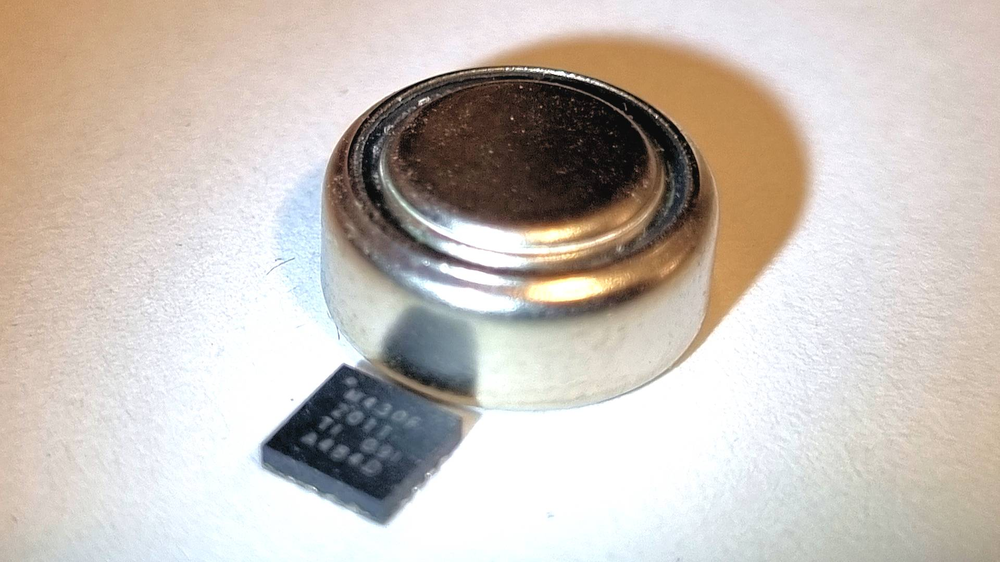
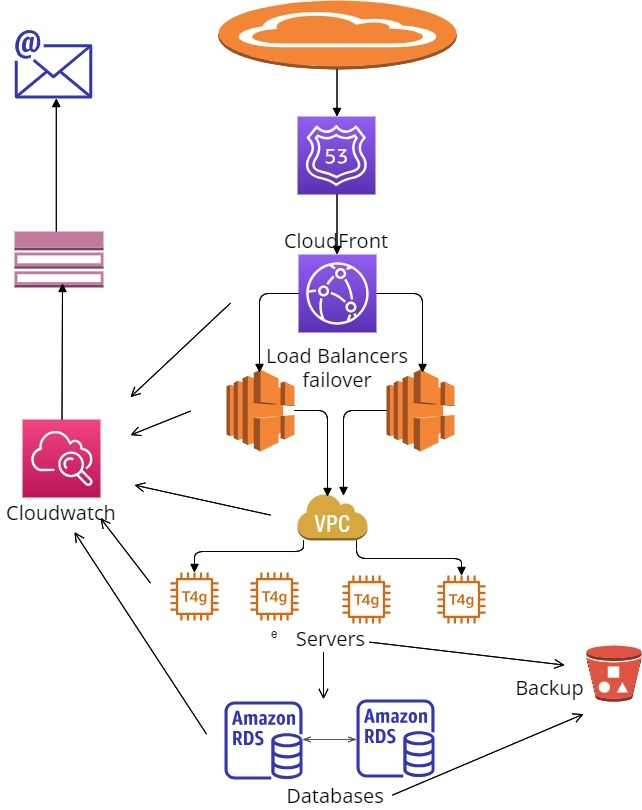

ברוכים הבאים לאתר המאמרים שלי
מטרת סוללה: שיקולים בפיתוח מערכות אמבדד חסכוניות בחשמל
מאת: עידו גנדל
מתקני המחזור מלאים בסוללות שאולי אפשר היה לנצל אותן טוב יותר. הנה מאמר קצר על חשיבה ותכנון מוכווני צריכת חשמל בפיתוח אמבדד.

עוד לא פגשתי מתכנת מחשבים שלקח בחשבון את צריכת החשמל של הקוד שלו. השיקול
הכי קרוב, אולי, הוא העומס על המעבד הראשי, וגם אז המטרה ברוב המקרים היא רק
לפנות משאבים עבור קוד אחר. בעולם האמבדד, לעומת זאת, חיסכון בחשמל יכול להיות
השיקול החשוב ביותר בפרויקט, והוא נעשה הן באמצעי תוכנה והן בחומרה. הבעיה
הבסיסית היא שמערכות אמבדד רבות צריכות לעבוד על סוללה זמן ממושך מאוד. מי ירצה
מקלדת אלחוטית שצריך להחליף בה סוללה פעם בשבוע, או שעון חכם שחייבים לטעון כל
שעה עגולה? וזה לא רק עניין של נוחות: משדר למעקב אחרי לוויתנים או כלבי ים חייב
לשחות עם בעל החיים ולפעול שבועות וחודשים בלי שום אפשרות תחזוקה, ויש עוד הרבה
מאוד מקרים דומים, גם אם פחות אקזוטיים. תכנון מוצלח של מערכת חסכונית בחשמל
מחייב לקחת בחשבון גורמים רבים שתלויים זה בזה, ולכן הוא יהיה כמעט תמיד איטרטיבי.
אנחנו נתחיל במיפוי מצבי הפעולה השונים של המערכת (לדוגמה: המתנה לפקודה, איסוף
ועיבוד נתונים, הפעלת מנוע חשמלי), והאחוז מהזמן הכולל שבו המערכת צפויה להיות בכל
אחד מהם. נסתכל גם על הדרישות הטכניות מהמערכת, כגון עוצמת המנוע הדרושה, או
הגודל המקסימלי שמותר לאלקטרוניקה לתפוס במוצר. כל המידע הזה ייתן לנו הערכה
ראשונית של סוג הרכיבים שאיתם נוכל לעבוד, ושל סוג וגודל הסוללה הדרושים.
באופטימיזציה "קלאסית" של קוד תוכנה, אחד מחוקי היסוד הוא שצריך להשקיע בקטעים
שבהם התוכנה נמצאת רוב הזמן. ניקח לדוגמה מנוע גרפי למשחקים: גם אם אקצר את זמן
הטעינה של המנוע עצמו בחמש שניות שלמות, זה עדיין יהיה פחות משמעותי מקיצוץ של
:אלפית שנייה בלבד במשך הרינדור של כל פריים יחיד. אותו הדבר נכון לגבי צריכת חשמל
אם גאדג'ט נמצא במצב רדום שבוע שלם ואז מפעיל נורת פלאש רבת עוצמה לשבריר
שנייה, המקום הנכון לקיצוצים הוא המצב הרדום – וזה אומר להסתכל על זרמים חשמליים
בקנה מידה של אלפיות ואפילו מיליוניות אמפר. בשביל הפרופורציה, אלו הם ערכים
שמתקרבים לערכי הפריקה העצמית של סוללות (המטען שהם מאבדות עם השנים רק
מעצם השהייה שלהן במגירה). בפועל זה אומר לבחון במיקרוסקופ אלקטרונים, כביכול, כל
מצב פעולה, לחפש מקומות ותנאים שאפשר לחסוך בהם, לנבור בדפי נתונים של רכיבים,
למדוד(!), ומדי פעם להסיק מסקנות ביניים שיחזירו אותנו לסבב שינויים במיפוי שאיתו
התחלנו. בסופו של דבר נמצא פתרון משביע רצון, או שנגלה שמדובר בחלום בלתי ניתן
להגשמה בטכנולוגיות של ימינו (כן, גם זה קורה לפעמים). כמו בכל אופטימיזציה כמעט,
הגרף של תועלת כפונקציה של השקעה הוא אסימפטוטי: מעבר לנקודה מסוימת תידרש
יותר ויותר השקעה כדי להשיג שיפורים הולכים וקטנים. השאיפה הריאלית צריכה לפיכך
להיות מציאה של נקודת איזון מעשית לעולם האמיתי, לא שבירה של שיא עולם.
מערכת זמינות גבוהה ב AWS
מאת: System Intelligence ACE
היתרונות של פתרונות תשתית זמינות גבוהה שלנו ב AWS הם רבים ויכולים למטב את הגישה לשרתים שלכם. המערכת מספקת סביבת אירוח אמינה וניתנת להרחבה עבור היישומים או השירותים שלכם.

היתרונות של פתרונות תשתית זמינות גבוהה שלנו ב AWS הם רבים ויכולים למטב את
הגישה לשרתים שלכם. המערכת מספקת סביבת אירוח אמינה וניתנת להרחבה עבור
היישומים או השירותים שלכם. להלן כמה יתרונות מרכזיים שמערכות שאנו בונים מספקות:
זמן פעולה ואמינות מוגברים: הגדרת הזמינות הגבוהה ממזערת זמן השבתה והפרעות
בשירות. עם רכיבים יתירים ומנגנוני מעבר רשת אוטומטיים במקרה של כשל, אפשר לסמוך
על כך שהיישומים יישארו נגישים ותפעוליים גם לנוכח כשלי חומרה או בעיות בלתי צפויות אחרות.
מדרגיות: הפתרון שלנו מאפשר ליישומים להתרחב בצורה חלקה בהתאם לביקוש.
המשמעות היא שהמערכת יכולה להתמודד עם עליות תנועה פתאומיות או פעילות מוגברת
של משתמשים מבלי להשפיע לרעה על הביצועים.
אופטימיזציה של ביצועים: על ידי שימוש במאזני עומסים (load balancers) וברשתות
הפצת תוכן כמו CloudFront, המערכת מבטיחה שתוכן יוגש ממיקום הקצה הקרוב ביותר
למשתמשים, דבר שמוביל לזמני טעינה מהירים יותר ולחוויות משתמש כלליות טובות יותר.
טווח הגעה עולמי: מיקומי הקצה של CloudFront מאפשרים אספקת תוכן במהירות
למשתמשים ברחבי העולם, דבר חשוב במיוחד עבור לקוחות שרוצים לספק את שירותיהם
לקהל גלובלי.
אבטחה ותאימות: מערכות AWS מספקות מסגרת אבטחה חזקה. אתם יכולים לנצל תכונות
כמו ענן פרטי וירטואלי (VPC), קבוצות אבטחה וניהול זהות וגישה של AWS (IAM) כדי
להבטיח את האבטחה של היישומים והנתונים שלכם.
גמישות והתאמה אישית: ניתן להתאים את הפתרון שלנו כדי לענות על כל דרישותכם
הספציפיות. ניתן להגדיר תצורות שונות, ערימות יישומים וסביבות שונות כדי להתאים
לצרכים משתנים.
תמיכה ומומחיות: כספקים של פתרונות אלו, אנחנו מציעים רמות שונות של תמיכה, כולל
הדרכה לגבי שיטות עבודה מומלצות, סיוע בפתרון בעיות, ניטור ותגובה 24/7.
התמקדות בעסק הליבה: מיקור חוץ של ניהול התשתית עם הפתרונות שלנו מאפשר לכם
להתרכז בפעילויות הליבה העסקיות שלהם במקום לדאוג מהמורכבות של ניהול ותחזוקת
שרתים ומערכות מורכבות.
בדיקות תוכנה ו-QA: כיצד להבטיח את האיכות של המוצר שלך
מאת: LAV
בדיקות תוכנה ואבטחת איכות הן לב ליבו של כל מוצר תוכנה מוצלח. בעידן הטכנולוגי, הן מהוות את ההבדל בין מוצר ששובר שוק למוצר ששוקע בשכחה. הכתבה הבאה תלמד אותך איך לבנות תהליכי QA אפקטיביים שיבטיחו את המעמד של התוכנה שלך.
בעולם שבו תוכנה מכריעה בכל פינה, אבטחת איכות ובדיקות תוכנה הן המפתח להבטחת
מוצר סופי ללא פשרות. איכות היא לא רק סלוגן אלא חובה בתחרות המתמדת לליבו של
הלקוח. אז איך עושים זאת נכון? איך משלבים בין יצירתיות לבין מדע נתונים בעולם ה-QA?
הנה כמה עקרונות מנחים. ראשית, חשוב להבין שבדיקות תוכנה הן תהליך שמתחיל כבר
בשלב התכנון ונמשך עד שהמוצר מושק לשוק. הן כוללות את הבדיקה הפנימית של הקוד,
בדיקות ידניות ואוטומטיות, ועוברות דרך בדיקות המשתמש הסופי. כל שלב חיוני לגילוי
באגים, פערים ולשיפור המוצר. העקרון השני הוא הבנה שבדיקות אינן פעולה חד-פעמית
אלא תהליך רב שלבי שמתמשך גם לאחר השקת המוצר. זה כולל שימוש בפידבק
ממשתמשים, ניתוח נתונים והתאמה רציפה של התוכנה לצרכים המשתנים של השוק.
שלישית, התקדמות הטכנולוגיה מאפשרת שימוש בכלים מתקדמים לבדיקת תוכנה.
ממערכות אוטומטיות שבודקות את התוכנה באופן עצמאי, דרך כלי ניתוח נתונים שמזהים
דפוסים ובעיות פוטנציאליות, ועד לשימוש בבינה מלאכותית להקלה על התהליך. לבסוף,
חשוב להבין שבדיקות תוכנה ואבטחת איכות הן לא רק משימה טכנית אלא גם אסטרטגיה
עסקית. ההשקעה ב-QA היא השקעה באמינות, בתדמית ובעתיד של המוצר. זו אפילו דרך
להבדיל את עצמך מהמתחרים, על ידי הצגת מחויבות לאיכות ויציבות. במאמר זה, סקרנו
רק חלק קטן מהעולם המורכב והרחב של בדיקות תוכנה ואבטחת איכות. אך המסר ברור:
בעידן שבו תוכנה נמצאת בכל מקום, עליך להבטיח שהמוצר שלך עומד בסטנדרטים
הגבוהים ביותר. עם תכנון נכון, כלים מתקדמים והשקעה באיכות, המוצר שלך יכול להיות
לא רק תוכנה אלא חוויה שמשנה את המשחק.